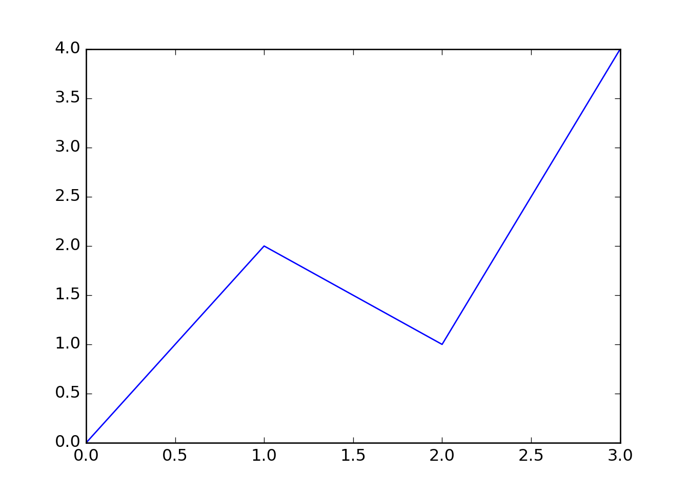

Chapter 3 Python
3.2 Modify an R variable
In the following chunk, the value of x on the right hand side
is 42, which was defined in the previous chunk.
## [1] 543.3 A Python chunk
This works fine and as expected.
## Python version = 3.5.2 (default, Nov 12 2018, 13:43:14)
## [GCC 5.4.0 20160609]## 84The value of x in the Python session is 84.
It is not the same x as the one in R.
3.4 Modify a Python variable
## 102Retrieve the value of x from the Python session again:
## [1] 102Assign to a variable in the Python session from R:
See the value of y in the Python session:
## [1, 2, 3, 4, 5]3.6 Python graphics
You can draw plots using the matplotlib package in Python:
